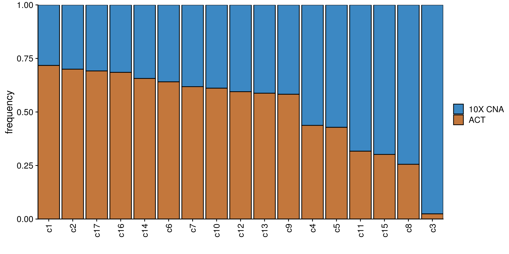
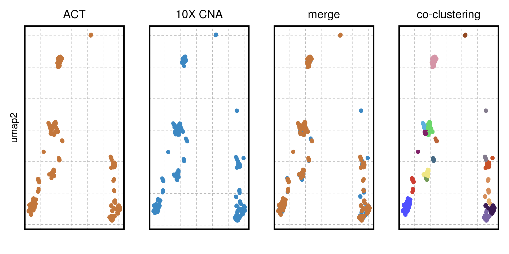
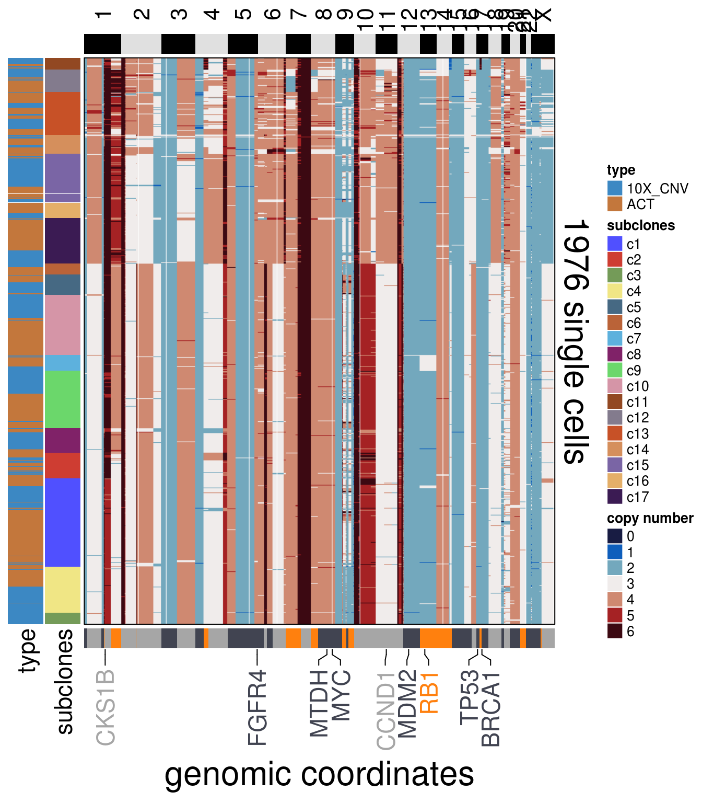
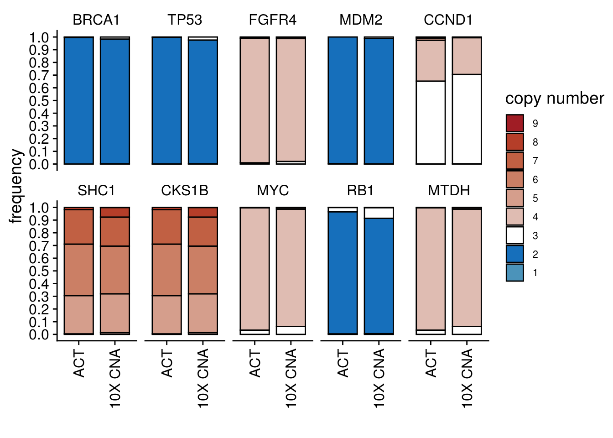
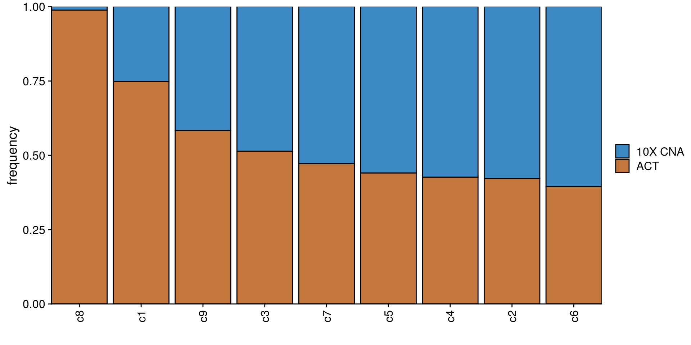
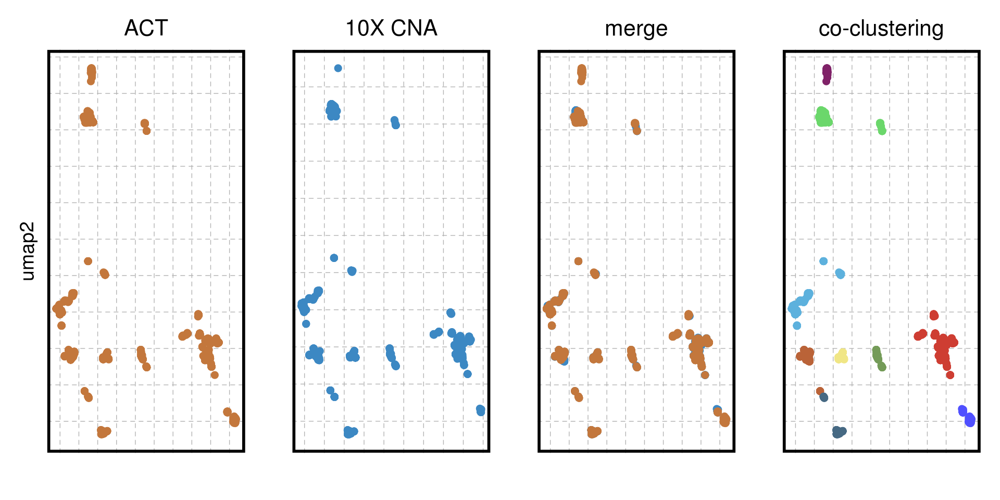
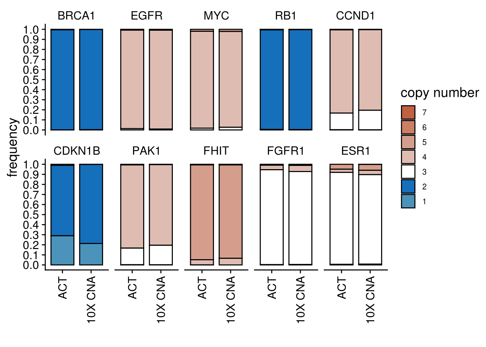
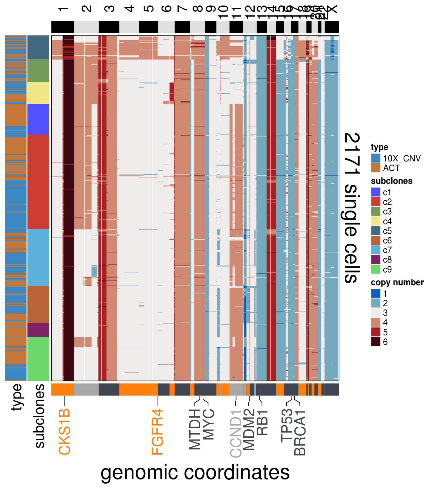

5 ACT & 10X CNA
source("R/setup.R")
source("R/cn_freq_barplot.R")
source("R/run_umap.R")
source("R/run_clustering.R")
source("R/order_dataset.R")
source("R/plot_umap.R")
source("R/calculate_consensus.R")
source("R/consensus_genomic_classes.R")
source("R/run_me_tree.R")
source("R/plot_heatmap.R")cocluster_theme <- list(theme_cowplot(),
theme(axis.text.x= element_blank(),
axis.ticks.x=element_blank(),
axis.text.y = element_blank(),
axis.ticks.y = element_blank(),
axis.line = element_blank(),
legend.position = "none",
panel.grid.major = element_line(size = .25, color = 'gray70', linetype = "dashed"),
panel.grid.minor = element_line(size = .25, color = 'gray70', linetype = "dashed"),
legend.title = element_blank(),
plot.title = element_text(hjust = 0.5,
face = "plain"),
legend.text = element_text(size = 14),
panel.border = element_rect(color = "black",
fill = NA,
size = 2)),
xlab("umap1"), ylab("umap2"),
guides(colour = guide_legend(override.aes = list(alpha=1)))
)5.1 TN1 Co-clustering umaps
TN1_ploidy <- 3.45
TN1_cocluster_popseg_long_ml <- readRDS(here("extdata/merge_levels/TN1_cocluster_popseg_long_ml.rds"))
TN1_cocluster_umap <- run_umap(TN1_cocluster_popseg_long_ml,
ploidy_VAL = TN1_ploidy,
round = TRUE)## Constructing UMAP embedding.## Building SNN graph.## Running hdbscan.## cluster n percent
## c1 308 0.15587045
## c10 211 0.10678138
## c11 41 0.02074899
## c12 79 0.03997976
## c13 148 0.07489879
## c14 67 0.03390688
## c15 169 0.08552632
## c16 54 0.02732794
## c17 159 0.08046559
## c2 90 0.04554656
## c3 41 0.02074899
## c4 160 0.08097166
## c5 70 0.03542510
## c6 39 0.01973684
## c7 55 0.02783401
## c8 86 0.04352227
## c9 199 0.10070850## Done.TN1_cocluster_df <- TN1_cocluster_cluster %>%
mutate(tech = case_when(
str_detect(cells, "TN") ~ "ACT",
TRUE ~ "10X CNA"
))
TN1_cocl_freq_plot <- TN1_cocluster_df %>%
group_by(subclones) %>%
count(tech) %>%
mutate(freq = n/sum(n)) %>%
ggplot(aes(fct_reorder2(subclones, tech, freq),
freq)) +
geom_col(aes(fill = tech), color = "black") +
scale_fill_manual(values = c("#3C88C3", "#C3773C")) +
scale_x_discrete(expand = c(0,0)) +
scale_y_continuous(expand = c(0,0)) +
ylab("frequency") +
xlab("") +
labs(fill = NULL) +
theme(axis.text.x = element_text(angle = 90,
hjust = 1,
vjust = .5))
TN1_cocl_freq_plot
TN1_cocluster_umap$sample <- case_when(
grepl("TN28", TN1_cocluster_umap$cell) ~ "ACT",
TRUE ~ "10X CNA"
)
TN1_cocluster_umap <- TN1_cocluster_umap %>%
arrange(sample) %>%
left_join(TN1_cocluster_cluster, by = c("cell" = "cells"))
TN1_cocluster_p_merge <-
ggplot(TN1_cocluster_umap) +
geom_point(aes(x = V1, y = V2, color = sample), size = 2, alpha = 1) +
scale_color_manual(values = c("#3C88C3", "#C3773C")) +
ggtitle("merge") +
cocluster_theme + ylab("") + xlab("")
TN1_cocluster_p_act <- ggplot(TN1_cocluster_umap %>% filter(sample == "ACT")) +
geom_point(aes(x = V1, y = V2, color = sample), size = 2, alpha = 1) +
scale_color_manual(values = c("#C3773C")) +
ggtitle("ACT") +
cocluster_theme + xlab("")
TN1_cocluster_p_tenx <- ggplot(TN1_cocluster_umap %>% filter(sample == "10X CNA")) +
geom_point(aes(x = V1, y = V2, color = sample), size = 2, alpha = 1) +
scale_color_manual(values = c("#3C88C3")) +
ggtitle("10X CNA") +
cocluster_theme + ylab("") + xlab("")
TN1_cocluster_p_cluster <-
ggplot(TN1_cocluster_umap) +
geom_point(aes(x = V1, y = V2, color = subclones), size = 2, alpha = 1) +
scale_color_manual(values = colors_vector$subclones) +
cocluster_theme +
ggtitle("co-clustering") +
xlab("") + ylab("")
TN1_cocluster_p <- TN1_cocluster_p_act + TN1_cocluster_p_tenx + TN1_cocluster_p_merge + TN1_cocluster_p_cluster + patchwork::plot_layout(nrow = 1)
TN1_cocluster_p
TN1_cocluster_ordered <- order_dataset(popseg_long = TN1_cocluster_popseg_long_ml,
clustering = TN1_cocluster_cluster)
TN1_cocluster_consensus <- calculate_consensus(df = TN1_cocluster_ordered$dataset_ordered,
clusters = TN1_cocluster_ordered$clustering_ordered$subclones)
TN1_cocluster_gen_classes <- consensus_genomic_classes(TN1_cocluster_consensus,
ploidy_VAL = TN1_ploidy)
TN1_cocluster_me_consensus_tree <- run_me_tree(consensus_df = TN1_cocluster_consensus,
clusters = TN1_cocluster_cluster,
ploidy_VAL = TN1_ploidy,
plot = FALSE)
TN1_cocluster_annotation_genes <- c("BRCA1",
"TP53",
"FGFR4",
"MDM2",
"CCND1",
"SHC1",
"CKS1B",
"MYC",
"RB1",
"MTDH")
plot_heatmap(df = TN1_cocluster_ordered$dataset_ordered,
ploidy_VAL = TN1_ploidy,
ploidy_trunc = 2*(round(TN1_ploidy)),
clusters = TN1_cocluster_ordered$clustering_ordered,
genomic_classes = TN1_cocluster_gen_classes,
keep_gene = TN1_cocluster_annotation_genes,
tree_order = TN1_cocluster_me_consensus_tree$cs_tree_order,
show_legend = TRUE,
cocluster = TRUE)## 'select()' returned 1:1 mapping between keys and columns## Warning: The input is a data frame, convert it to the matrix.
5.2 TN1 Gene Frequency Barplot
# ~~~~~~~~~~~~~~~~~~~~~~~~~~~~~~~~~~~ Tue Nov 24 17:13:42 2020
# Tumors Heatmaps/Consensus/Trees
# ~~~~~~~~~~~~~~~~~~~~~~~~~~~~~~~~~~~ Tue Nov 24 17:13:47 2020
TN1_popseg_long_ml <- readRDS(here("extdata/merge_levels/TN1_popseg_long_ml.rds"))
TN1_10xcnv_popseg_long_ml <- readRDS(here("extdata/merge_levels/TN1_10xcnv_popseg_long_ml.rds"))
cn_freq_barplot(
act_df = TN1_popseg_long_ml,
tenx_df = TN1_10xcnv_popseg_long_ml,
keep_genes = c(
"BRCA1",
"TP53",
"FGFR4",
"MDM2",
"CCND1",
"SHC1",
"CKS1B",
"MYC",
"RB1",
"MTDH"
),
ploidy_VAL = TN1_ploidy
)## 'select()' returned 1:1 mapping between keys and columns
## 'select()' returned 1:1 mapping between keys and columns
5.3 TN3 Co-clustering umaps
TN3_ploidy <- 3.44
TN3_cocluster_popseg_long_ml <- readRDS(here("extdata/merge_levels/TN3_cocluster_popseg_long_ml.rds"))
TN3_cocluster_umap <- run_umap(TN3_cocluster_popseg_long_ml,
ploidy_VAL = TN3_ploidy,
round = TRUE)## Constructing UMAP embedding.## Building SNN graph.## Running hdbscan.## cluster n percent
## c1 191 0.08797789
## c2 595 0.27406725
## c3 144 0.06632888
## c4 136 0.06264394
## c5 152 0.07001382
## c6 233 0.10732381
## c7 356 0.16397973
## c8 88 0.04053432
## c9 276 0.12713035## Done.TN3_cocluster_df <- TN3_cocluster_cluster %>%
mutate(tech = case_when(
str_detect(cells, "TN") ~ "ACT",
TRUE ~ "10X CNA"
))
TN3_cocl_freq_plot <- TN3_cocluster_df %>%
group_by(subclones) %>%
count(tech) %>%
mutate(freq = n/sum(n)) %>%
ggplot(aes(fct_reorder2(subclones, tech, freq),
freq)) +
geom_col(aes(fill = tech), color = "black") +
scale_fill_manual(values = c("#3C88C3", "#C3773C")) +
scale_x_discrete(expand = c(0,0)) +
scale_y_continuous(expand = c(0,0)) +
ylab("frequency") +
xlab("") +
labs(fill = NULL) +
theme(axis.text.x = element_text(angle = 90,
hjust = 1,
vjust = .5))
TN3_cocl_freq_plot
TN3_cocluster_umap$sample <- case_when(
grepl("TN17", TN3_cocluster_umap$cell) ~ "ACT",
TRUE ~ "10X CNA"
)
TN3_cocluster_umap <- TN3_cocluster_umap %>%
arrange(sample) %>%
left_join(TN3_cocluster_cluster, by = c("cell" = "cells"))
TN3_cocluster_p_merge <-
ggplot(TN3_cocluster_umap) +
geom_point(aes(x = V1, y = V2, color = sample), size = 2, alpha = 1) +
scale_color_manual(values = c("#3C88C3", "#C3773C")) +
ggtitle("merge") +
cocluster_theme + ylab("") + xlab("")
TN3_cocluster_p_act <- ggplot(TN3_cocluster_umap %>% filter(sample == "ACT")) +
geom_point(aes(x = V1, y = V2, color = sample), size = 2, alpha = 1) +
scale_color_manual(values = c("#C3773C")) +
ggtitle("ACT") +
cocluster_theme + xlab("")
TN3_cocluster_p_tenx <- ggplot(TN3_cocluster_umap %>% filter(sample == "10X CNA")) +
geom_point(aes(x = V1, y = V2, color = sample), size = 2, alpha = 1) +
scale_color_manual(values = c("#3C88C3")) +
ggtitle("10X CNA") +
cocluster_theme + ylab("") + xlab("")
TN3_cocluster_p_cluster <-
ggplot(TN3_cocluster_umap) +
geom_point(aes(x = V1, y = V2, color = subclones), size = 2, alpha = 1) +
scale_color_manual(values = colors_vector$subclones) +
cocluster_theme +
ggtitle("co-clustering") +
xlab("") + ylab("")
TN3_cocluster_p <- TN3_cocluster_p_act + TN3_cocluster_p_tenx + TN3_cocluster_p_merge + TN3_cocluster_p_cluster + patchwork::plot_layout(nrow = 1)
TN3_cocluster_p
5.4 TN3 Gene Frequency Barplot
# ~~~~~~~~~~~~~~~~~~~~~~~~~~~~~~~~~~~ Tue Nov 24 17:13:42 2020
# Tumors Heatmaps/Consensus/Trees
# ~~~~~~~~~~~~~~~~~~~~~~~~~~~~~~~~~~~ Tue Nov 24 17:13:47 2020
TN3_ploidy <- 3.44
TN3_popseg_long_ml <- readRDS(here("extdata/merge_levels/TN3_popseg_long_ml.rds"))
TN3_10xcnv_popseg_long_ml <- readRDS(here("extdata/merge_levels/TN3_10xcnv_popseg_long_ml.rds"))
cn_freq_barplot(
act_df = TN3_popseg_long_ml,
tenx_df = TN3_10xcnv_popseg_long_ml,
keep_genes = c("BRCA1",
"EGFR",
"MYC",
"RB1",
"CCND1",
"CDKN1B",
"PAK1",
"FHIT",
"FGFR1",
"ESR1"),
ploidy_VAL = TN3_ploidy
)## 'select()' returned 1:1 mapping between keys and columns
## 'select()' returned 1:1 mapping between keys and columns
TN3_cocluster_ordered <- order_dataset(popseg_long = TN3_cocluster_popseg_long_ml,
clustering = TN3_cocluster_cluster)
TN3_cocluster_consensus <- calculate_consensus(df = TN3_cocluster_ordered$dataset_ordered,
clusters = TN3_cocluster_ordered$clustering_ordered$subclones)
TN3_cocluster_gen_classes <- consensus_genomic_classes(TN3_cocluster_consensus,
ploidy_VAL = TN3_ploidy)
TN3_cocluster_me_consensus_tree <- run_me_tree(consensus_df = TN3_cocluster_consensus,
clusters = TN3_cocluster_cluster,
ploidy_VAL = TN3_ploidy,
plot = FALSE)
TN3_cocluster_annotation_genes <- c("BRCA1",
"TP53",
"FGFR4",
"MDM2",
"CCND1",
"SHC1",
"CKS1B",
"MYC",
"RB1",
"MTDH")
plot_heatmap(df = TN3_cocluster_ordered$dataset_ordered,
ploidy_VAL = TN3_ploidy,
ploidy_trunc = 2*(round(TN3_ploidy)),
clusters = TN3_cocluster_ordered$clustering_ordered,
genomic_classes = TN3_cocluster_gen_classes,
keep_gene = TN3_cocluster_annotation_genes,
tree_order = TN3_cocluster_me_consensus_tree$cs_tree_order,
show_legend = TRUE,
cocluster = TRUE)## 'select()' returned 1:1 mapping between keys and columns## Warning: The input is a data frame, convert it to the matrix.